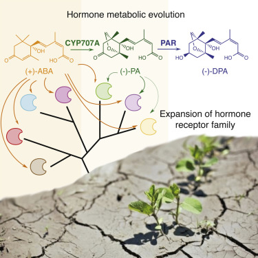
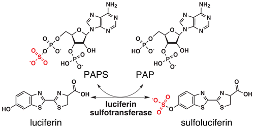
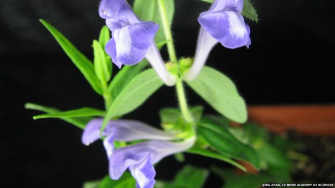
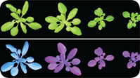
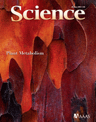
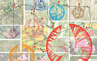
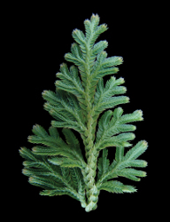
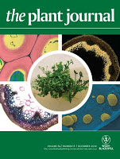
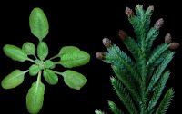
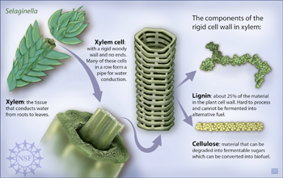

†Co-first authors; *Co-corresponding authors. Full-text access via ResearchGate.
34. Levsh O, Chiang YC, Tung C, Noel JP, Wang Y*, Weng JK*. (2016) Active site dynamism enables enhanced selectivity toward native substrate in a substrate-permissive acyltransferase. (Submitted)
33. Al-Wathiqui N†, Fallon TR†, South A, Weng JK*, Lewis SM*. (2016) Molecular composition of male nuptial gifts in fireflies: shedding light on postcopulatory sexual selection. (Submitted)
32. Edgar S, Li FS, Qiao K, Weng JK*, Stephanopoulos G*. (2016) Engineering of taxadiene synthase for improved selectivity and yield of a key taxol biosynthetic intermediate. (Submitted)
31. Li FS and Weng JK. (2016) Rediscovering and demystifying ancient herbal medicines with modern approaches. (Submitted)
30. Weng JK, Ye M, Li B, Noel JP. (2016) Co-evolution of hormone metabolism and signaling networks expands plant adaptive plasticity. Cell. 166:881-893.

Deposited structures: 5JNN, 5JO1, 5JO2
Deposited sequencing datasets: GSE65739
News coverage by PYSORG: Disregarded plant molecule actually a treasure.
29. Fallon TR, Li FS, Vicent MA, Weng JK. (2016) Sulfoluciferin is biosynthesized by a specialized luciferin sulfotransferase in fireflies. Biochemistry. 55:3341–3344.

Deposited sequencing datasets: GEOW00000000
Deposited plasmids: 74121, 74122, 74123
28. Torrens-Spence MP†, Fallon TR†, Weng JK. (2016) A workflow for studying specialized metabolism in nonmodel eukaryotic organisms. Methods Enzymol. 576:69-97.
27. Zhao Q, Zhang Y, Wang G, Hill L, Weng JK, Chen XY, Xue H, Martin C. (2016) A specialized flavone biosynthetic pathway has evolved in the medicinal plant, Scutellaria baicalensis. Sci Adv. 2:e1501780.

News coverage by BBC: Chinese medicine plant secrets probed.
26. Fallon TR and Weng JK. (2014) A Molecular Gauge for Nitrogen Economy in Plants. Cell. 159:977-978.
25. Weng JK. (2014) The evolutionary paths towards complexity: a metabolic perspective. New Phytol. 201:1141-1149.
24. Weng JK. (2013) Elegant biochemistry, chaotic origin. New Phytol. 200:592-594.
23. Weng JK and Noel JP. (2013) Chemodiversity in Selaginella: a reference system for parallel and convergent metabolic evolution in terrestrial plants. Front Plant Sci. 4:119.
22. Weng JK and Noel JP. (2012) The remarkable pliability and promiscuity of specialized metabolism. Cold Spring Harb Symp Quant Biol. 77:309-320.
21. Weng JK, Li Y, Mo H, Chapple C. (2012) Assembly of an evolutionarily new pathway for α-pyrone biosynthesis in Arabidopsis. Science. 337:960-964.

News coverage by PYSORG: Never-before-seen plant metabolites discovered.
20. Weng JK, Philippe RN, Noel JP. (2012) The rise of chemodiversity in plants. Science. 336:1667-1670.


Highlighted by the NSF press release: Provocative Prescription for Chemical Evolution in Plants.
19. Weng JK and Noel JP. (2012) Structure-function analyses of plant type III polyketide synthases. Methods Enzymol. 515: 317-335.
18. Bonawitz ND, Soltau WL, Blatchley MR, Powers BL, Hurlock AK, Seals LA, Weng JK, Stout J, Chapple C. (2012) The REF4 and RFR1 subunits of the eukaryotic transcriptional coregulatory complex Mediator are required for phenylpropanoid homeostasis in Arabidopsis. J Bio Chem. 287: 5434-5445.
17. Weng JK, Akiyama T, Ralph J, Chapple C. (2011) Independent recruitment of an O-methyltransferase for syringyl lignin biosynthesis in Selaginella moellendorffii. Plant Cell. 23: 2708–2724.
16. Banks JA, Nishiyama T, Hasebe M, Bowman JL, Gribskov M, Depamphilis C, Albert VA, Aono N, Aoyama T, Ambrose BA, Ashton NW, Axtell MJ, Barker E, Barker MS, Bennetzen JL, Bonawitz ND, Chapple C, Cheng C, Correa LG, Dacre M, Debarry J, Dreyer I, Elias M, Engstrom EM, Estelle M, Feng L, Finet C, Floyd SK, Frommer WB, Fujita T, Gramzow L, Gutensohn M, Harholt J, Hattori M, Heyl A, Hirai T, Hiwatashi Y, Ishikawa M, Iwata M, Karol KG, Koehler B, Kolukisaoglu U, Kubo M, Kurata T, Lalonde S, Li K, Li Y, Litt A, Lyons E, Manning G, Maruyama T, Michael TP, Mikami K, Miyazaki S, Morinaga SI, Murata T, Mueller-Roeber B, Nelson DR, Obara M, Oguri Y, Olmstead RG, Onodera N, Petersen BL, Pils B, Prigge M, Rensing SA, Riaño-Pachón DM, Roberts AW, Sato Y, Scheller HV, Schulz B, Schulz C, Shakirov EV, Shibagaki N, Shinohara N, Shippen DE, Sørensen I, Sotooka R, Sugimoto N, Sugita M, Sumikawa N, Tanurdzic M, Theißen G, Ulvskov P, Wakazuki S, Weng JK, Willats WW, Wipf D, Wolf PG, Yang L, Zimmer AD, Zhu Q, Mitros T, Hellsten U, Loqué D, Otillar R, Salamov A, Schmutz J, Shapiro H, Lindquist E, Lucas S, Rokhsar D, Grigoriev IV. (2010) The Selaginella Genome Identifies Genetic Changes Associated with the Evolution of Vascular Plants. Science. 332:960-963.

News coverage by NPR: Decoding The Platypus Of The Plant Kingdom.
News coverage by EveryDay Science: A genome to improve the production of biofuels.
15. Weng JK, Mo H, Chapple C. (2010) Over-expression of F5H in COMT-deficient Arabidopsis leads to enrichment of an unusual lignin and disruption of pollen wall formation. Plant J. 64:898-911.

Featured cover article
14. Weng JK and Chapple C. (2010) The origin and evolution of lignin biosynthesis. New Phytol. 187:273-285.
Also featured in Sir Arthur Tansley’s ecosystem concept (a virtual special issue).
13. Li X, Bonawitz ND, Weng JK, Chapple C. (2010) The growth reduction associated with repressed lignin biosynthesis in Arabidopsis thaliana is independent of flavonoids. Plant Cell. 22:1620-1632.
12. Weng JK, Akiyama T, Bonawitz ND, Li X, Ralph J, Chapple C. (2010) Convergent evolution of syringyl lignin via distinct biosynthetic pathways in the lycophyte Selaginella and flowering plants. Plant Cell. 22:1033-1045.

Highlighted in the Editor’s Choice of Science 328:406-407 (2010). Cell Wall Construction
News release by ASPB: Convergent Evolution in Lignin Biosynthesis: Tools for Re-Engineering Biomass Composition.
11. Schilmiller AL, Stout J, Weng JK, Humphreys J, Ruegger MO, Chapple C. (2009) Mutations in the cinnamate 4-hydroxylase gene impact metabolism, growth and development in Arabidopsis. Plant J. 60:771-782.
10. Weng JK, Banks JA, Chapple C. (2008) Parallels in lignin biosynthesis: a study in Selaginella moellendorffii reveals convergence across 400 million years of evolution. Commun Integr Biol. 1:20-22.
9. Weng JK, Li X, Stout J, Chapple C. (2008) Independent origins of syringyl lignin in vascular plants. Proc Natl Acad Sci U S A. 105:7887-7892.

Highlighted by the NSF press release: When Plants “Think” Alike
Sci-tech news coverage by Popular Mechanics.
8. Li X, Weng JK, Chapple C. (2008) Improvement of biomass through lignin modification. Plant J. 54:569-581.
7. Weng JK, Li X, Bonawitz ND, Chapple C. (2008) Emerging strategies of lignin engineering and degradation for cellulosic biofuel production. Curr Opin Biotechnol. 19:166-172.
6. Weng HX, Weng JK, Yan AL, Hong CL, Yong WB, Qin YC. (2008) Increment of iodine content in vegetable plants by applying iodized fertilizer and the residual characteristics of iodine in soil. Biol Trace Elem Res. 123:218-228.
5. Weng HX, Sun XW, Weng JK, Qing YC, Dong H. (2008) Crucial roles of iron in the growth of Prorocentrum micans Ehrenberg (Dinophyceae). J Coastal Res. 24:176-183.
4. Weng JK, Tanurdzic M, Chapple C. (2005) Functional analysis and comparative genomics of expressed sequence tags from the lycophyte Selaginella moellendorffii. BMC Genomics. 6:85.
3. Wang W, Tanurdzic M, Luo M, Sisneros N, Kim HR, Weng JK, Kudrna D, Mueller C, Arumuganathan K, Carlson J, Chapple C, de Pamphilis C, Mandoli D, Tomkins J, Wing RA, Banks JA. (2005) Construction of a bacterial artificial chromosome library from the spikemoss Selaginella moellendorffii: a new resource for plant comparative genomics. BMC Plant Bio. 5:10.
2. Weng HX, Qin YC, Weng JK. (2005) Inherent correlation between decreased marine sedimentary phosphorus and glacial atmospheric CO2 decline. Geophys Res Lett. 32: L18606.
1. Weng HX, Weng JK, Yong WB, Sun XW, Zhong H. (2003) Capacity and degree of iodine absorbed and enriched by vegetable from soil. J Environ Sci. 15:107-111.